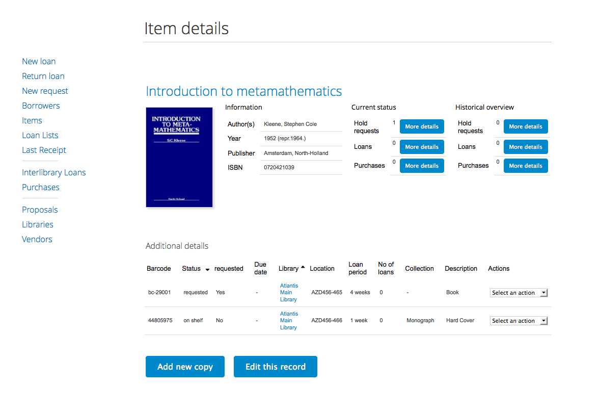
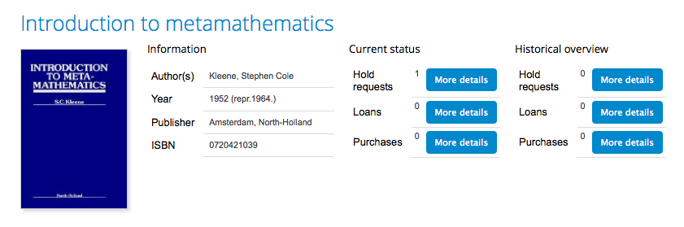

Manage Circulation¶
Invenio features a circulation module which allow the library to manage their physical items, manage patron loans- and borrower information, and keep track of interlibrary loans- and new purchases. The module can handle multiple internal and external libraries.
Librarians who have access will find it in the administration menu.

It is presented in an intuitive user interface whit different workflows for the different tasks. This guide will lead you though the different tasks and explain some of the optional configuration settings.

Circulation statistics are found in a the statistic module of Invenio.
1. Managing items¶
The items is the core of the circulation module. An item is attached to a bibliographic record and may contain multiple physical copies. The bibliographic data on top left side is extracted from the bibliographic metadata, while additional information, such as barcode, location, document type, and which library it belongs to, is added to each single copy.
The item site gives an overview over current and historical overviews (hold requests, loans, purchases), allow for updating and adding new copies, as well as creating loans and hold requests for specific copies.

1.1 Add new copies¶
The “Add new copy” button opens a form to fill out information for your new copy. The barcode field is mandatory while the open text fields are optional. All internal libraries will be displayed in the library list, while all document types are shown in the collection menu. The document type list and status alternatives are configurable, see section five.

1.2 Edit bibliographic record¶
The “Edit this record” button send the administrator directly to the cataloging module of Invenio. Documentation about the editor is found here, while a sneak peek is given under. One function to notice is the link directly back to the item in circulation.

1.3 Copy specific actions¶
The select list under the action column allow the administrator to conduct different tasks related to the specific copy.

- Update: Opens a form similar to the one presented in section one. Allows the administrator to update information about the copy.
- Add similar copy: Adds a new copy to the items. Differentiated from the “Add copy” button by pre-fill all fields without barcode.
- New request: Allow the administrator to create a request with the copy as the first step in the workflow. See section three for a complete guide of how to register new requests.
- New loan: Allow the administrator to create a loan with the copy as the first step in the workflow. See section two for a complete guide of how to register new loans.
- Delete copy: Deletes the copy. The administrator has to confirm before the copy is deleted.
1.4 Current status¶
1.5 Historical overview¶
1.6. Search for items¶
here are two ways of searching for an item:
2. Create loan¶
By selecting the button “edit basket” you are able to change the name, topic and manage group or public sharing rights.
The user makes the basket public by changing the global sharing rights from “No rights” to “View record”. Selecting the sub-choices “view comments” or “view comments and add comments” gives the public additional rights accordingly.
When the basket is made publicly accesible, a link to the url is found in the bottom left corner. This url is persistent and can be shared with friends and colleagues.
4. Create request¶
A person can get access to another users public basket by either been handed the url, or by searching in the search interface of the basket module. The user will then search in the metadata of the content.
By clicking on the name of the basket, the user are sent to the public site for that basket.
The user can now choose to subscribe for the basket itself, or set up a RSS feed based on the content in the basket.
If the user select to subscribe for the basket, the user have access to it through basket, under the tab “Public baskets”.